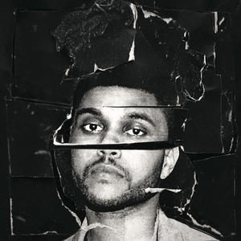
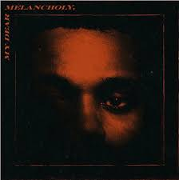
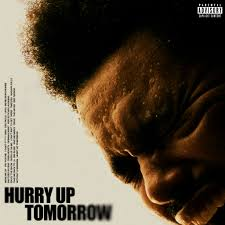
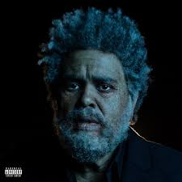

De mixtapes envoltas em mistério ao domínio global, Abel redefiniu o R&B moderno. Sua jornada sonora é uma fusão impecável entre o melancólico e o pop vibrante, provando que a vulnerabilidade sombria pode, sim, ocupar o topo das paradas mundiais. Cada álbum é uma nova camada de uma psique complexa e genial.

Mais que moda, uma narrativa visual sem precedentes. Cada era é um espetáculo cinematográfico onde figurinos e estéticas retro-futuristas não são apenas roupas, mas extensões de sua alma artística. Ele transformou a imagem do pop star em um conceito de arte viva, onde a imagem e o som se fundem em uma experiência única.

De um vulto anônimo no YouTube ao palco do Super Bowl, sua subida foi meteórica e disruptiva. Ao quebrar recordes históricos e desafiar as convenções da indústria, ele não apenas alcançou o sucesso; ele moldou os novos padrões do entretenimento global, provando ser a força indomável que deu origem ao Feel Beast.

O momento em que o underground encontrou o topo do mundo. Uma mistura de batidas brutais com melodias que definiram uma geração e consolidaram Abel como um gigante do pop.

A metamorfose completa sob as luzes de neon. Com influências do Daft Punk, este álbum transformou The Weeknd em um ícone pop definitivo, inalcançável e onipresente.

Um retorno cru e doloroso às raízes sombrias. Este projeto é um suspiro de tristeza intensamente pessoal, servindo como uma ponte emocional antes da próxima grande era.

Uma jornada cinematográfica por um mundo de isolamento e luzes psicodélicas. Aqui, o R&B encontra a estética cyberpunk em um cenário de medo e fascinação.

O capítulo final da trilogia atual. Uma promessa de conclusão e uma nova luz surgindo para o "Beast", encerrando o ciclo iniciado no After Hours com grandiosidade.

A peça final da Trilogy original. Melodias angustiantes que ecoam o vazio de uma alma que, mesmo no início da carreira, já narrava o lado obscuro da fama e do prazer.

O mixtape que mudou o jogo para sempre. Misterioso e inovador, ele apresentou ao mundo o som de Toronto: uma mistura de R&B, drogas e melancolia urbana.

O terno vermelho e o sorriso de sangue. Uma viagem psicodélica pelos excessos de Las Vegas, explorando a solidão, o arrependimento e a loucura da madrugada.

Uma transição espiritual guiada pela batida dos anos 80. A rádio que toca no fim do túnel para quem busca a redenção antes que o sol finalmente apareça.